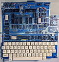

This is the main landing page for Rob's 1970's and 1980's Retro-Computing Archive site on GitHub and its various repositories:
Imagery of Past Projects
This repository contains a snapshot of some of my more interesting projects from the 1970's to late 1980's which I can say that I had actually built myself. I do have other interesting hardware projects but some of them were not built by me originally. This will provide you with a bit more visual context as to what type and extent of projects I used to build before getting distracted with a professional career in similar activities.
|  | New H19/VT52 firmware support for the Multiflex Video Display Terminal Kit of the 1982 era (3 ROM images) This repository contains new firmware for the Multiflex Z80 Video Display Terminal Kit (previously sold by Exceltronix of Toronto Canada in 1984) which adds a plethora of new features and functionality, including new H19/VT52 terminal emulation support. The original stock firmware which came with the terminal was quite primitive at best, only providing very basic text sending and receiving functionality. |
The 'Colossus Control Computer' -- A Beast of a Z80 Machine!
This repository documents my "Colossus Control Computer" which was my main go-to development machine ("It has every feature including the kitchen sink") which was started in March 1985. I call it a "beast of a Z80 machine" because it has more odds and ends + add-on gadgets than with most self-built computers. It was also the testbed and development platform for my follow-on March 1987 "Phoenix MIDI Computer". An interesting sub-project for Colossus was my Dec 1985 'Drum Pad Triggers for a MIDI Drum Machine'.
'Drum Pad Triggering System' for MIDI Usage - 1985
This repository documents a sub-project I designed and built in December 1985 to simulate SIMMONS electronic drum pads, "on the cheap" ($20 in parts compared to $1500). The intent was to design a physical drum pad interface which would provide digital triggers to my then-new Colossus Computer Computer which itself would create MIDI messages for a Roland TR-707 drum machine.
Cypher Z80/68000 Single Board Computer (of the 1984 era)
This repository strives to provide a historical snapshot, archive and description of the short lived Cypher Z80/68000 single board computer which was designed, built and sold by Motel Computers of Willowdale Ontario.
Parallel I/O, SASI Controller and R-Bus Interfaces Expansion Board for the Cypher Z80/68k SBC
This repository documents the hardware expansion board that I had designed and built for the Motel Computers Cypher Z80/68000 SBC in 1986.
Port Organizer and Break-Out Box Add-On for the Cypher Z80/68000 SBC (1985-era)
This repository documents the rather simple port organizer and break-out box that I had designed and built for the Motel Computers Cypher Z80/68000 SBC in 1985.
How to Boot CP/M-3 from the HxC Floppy Emulator on the Cypher Z80/68000 SBC
This repository explains how to boot from CP/M-3 via the HxC Floppy Emulator attached to the floppy disk controller interface connector of the 1985-era Motel Computers Cypher Z80/68000 SBC. This will allow the Cypher SBC to boot from the floppy emulator rather than its stock 8" floppy disks or 22MB hard disk.
EmuProm -- A Universal EPROM Emulator for 2716, 2732, 2764, 27128 and 27256
This repository documents a universal EPROM plug-in emulator which I designed and built in July 1985.
ZAP-A-PAL Programmer - A Variation on a 1987-era PAL Programmer
This repository documents a variation of the ZAP-A-PAL Programmer design by RCL9 from May 1987.
How to Speed up the Exidy Sorcerer I from 2Mhz to 3.16Mhz
This repository documents a hardware modification I made to my Exidy Sorcerer in 1981 to increase its clock rate from 2Mhz to 3.16Mhz, switchable.
Memory Cartridges for the Roland JX8P Synthesizer (from 1985)
This repository documents two designs for a programmable RAM cartridge for the Roland JX8P synthesizer which I had designed and built in late 1985. Prior to this design my only option would have been to buy an expensive Roland MC-16C Memory Cartridge which held just 16 patches. With my new design, the single plug-in cartridge could handle 256 patches and be programmed by an external computer.
Roland JX8P Synthesizer Patch Collection
This repository contains 15 Roland JX8P synthesizer patch banks, with up to 32 voices per bank, which were collected or created by me between 1985 and 1989.
Port FE - Sorcerers Users' Group (Toronto) Newsletter - March 1980 to December 1982
You can reach me at RetroComputingArchive@gmail.com
This repo is the most complete archive of the 'Port FE' newsletters from June 1979 through to the final issue published in December 1982. I have cleaned them up a bit and made them text-searchble.